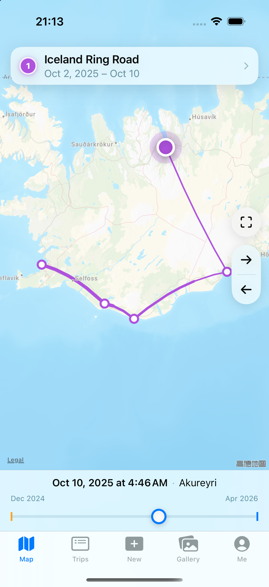
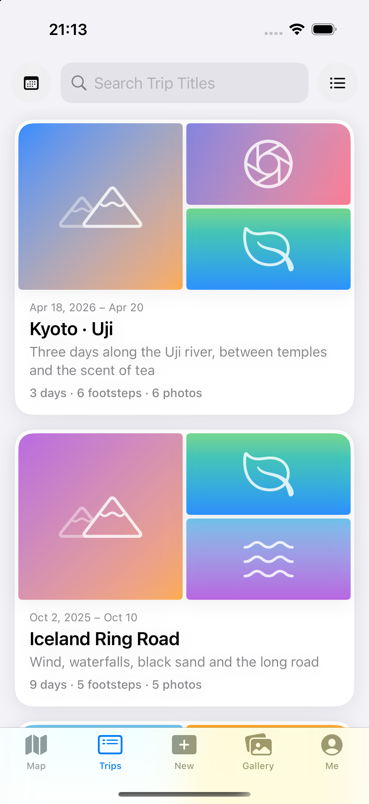
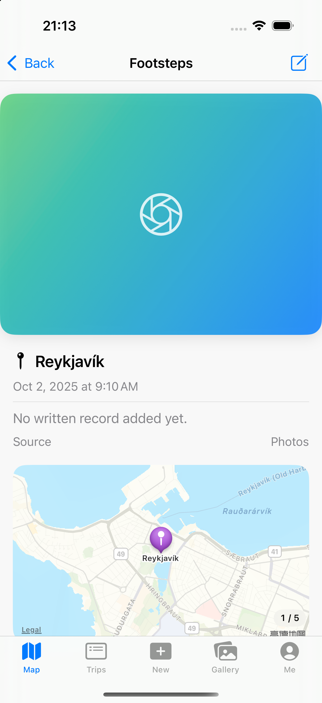
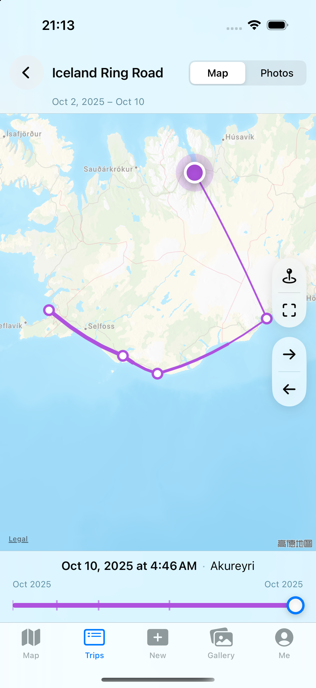

A route that thins with time
Each trip is one line that tapers from start to now. Scrub the timeline and the route redraws; revisits to the same place stay readable.
yunji is a travel journal for iPhone and iPad. Import your photos and it reads their time and place, then draws your journey as a route that you can scrub through, day by day.
A map, a journal and your photos — kept in step with time.
Each trip is one line that tapers from start to now. Scrub the timeline and the route redraws; revisits to the same place stay readable.
Card-style trips, calendar dots that jump to a day, and full-page footstep cards — photo, time, place and note, each in its place.
An activity heatmap, travel days per month and a year in review turn your habits into quiet, honest cards.
Capture time and GPS become each footstep's fixed reference; everything syncs privately over iCloud between your devices.
From a single tap on the map to a full-page footstep, yunji keeps every memory one swipe away.



Pick photos with location and yunji builds trajectory points from their real coordinates and capture times — a memory node for every stop.
yunji stores the capture timezone, so a 1 a.m. photo in Tokyo stays on Tokyo's day — wherever you read it later.
